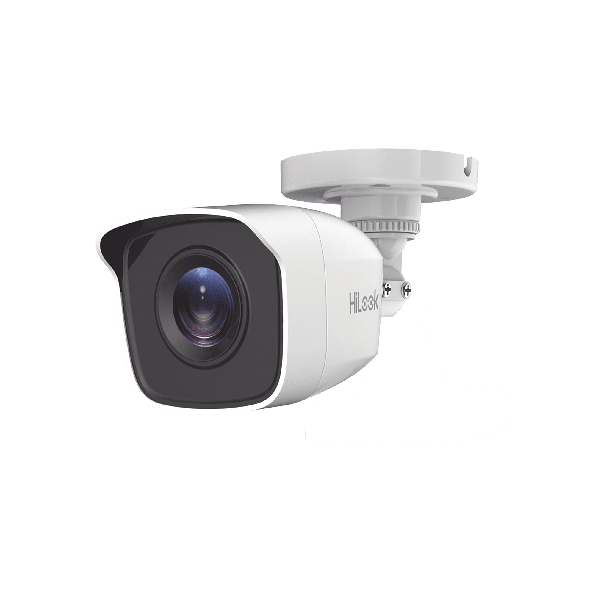

VIDEOVIGILANCIA FUNCIONAL
HiLook
Una línea de videovigilancia con opciones para proyectos que buscan cubrir necesidades esenciales. Según el modelo, puede integrarse en instalaciones analógicas o IP.
- Alternativas para distintos tamaños de proyecto
- Selección de cámara y grabador compatible
- Configuración según infraestructura y uso
La evaluamos para: hogares y comercios que necesitan una solución práctica, definida por el equipo disponible y la cobertura requerida.